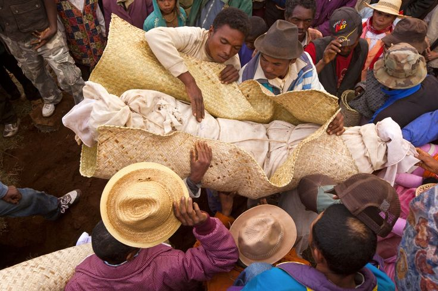
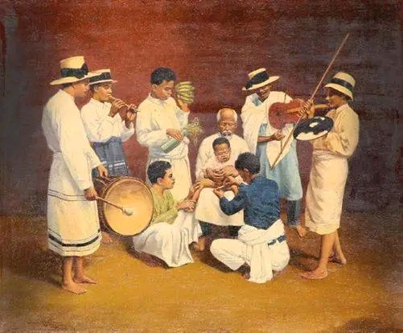
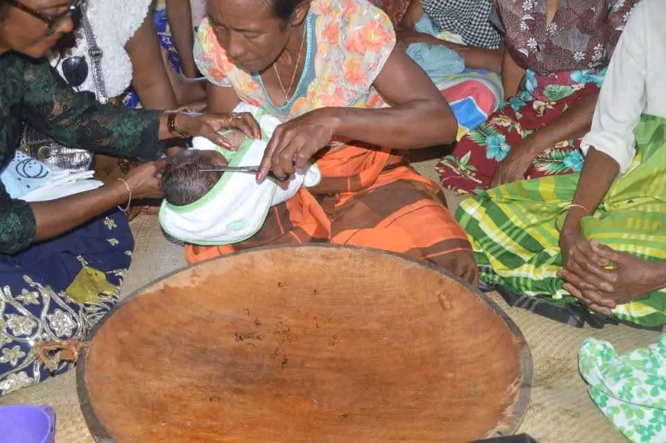
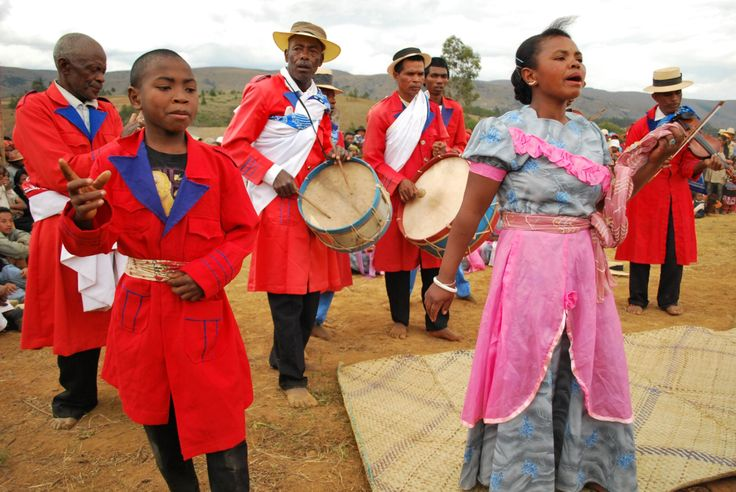
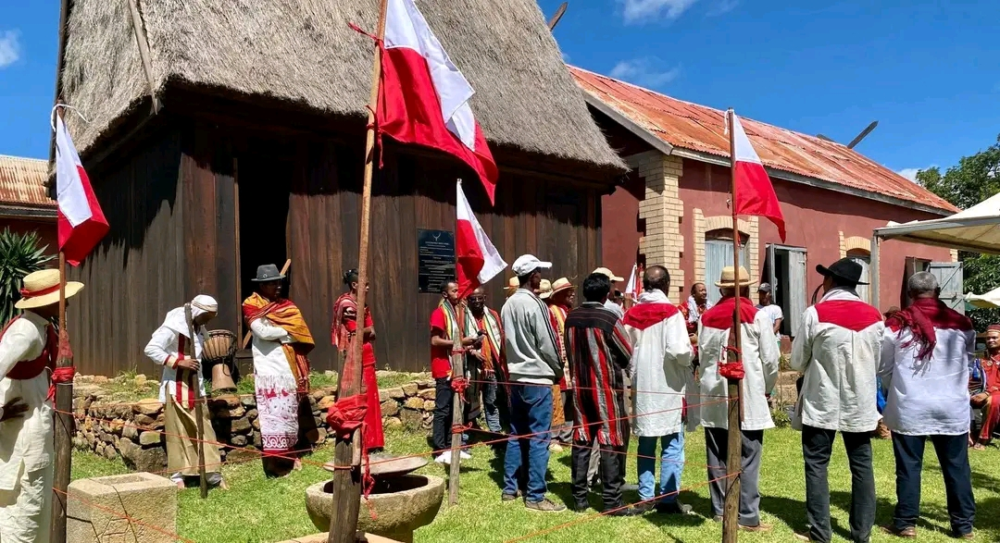

Les traditions malgaches sont un mélange unique de culte des ancêtres, de respect des aînés et de lien social fort — le Fihavanana. Elles incluent le Famadihana, le Sambatra, les Fady et le Vodiondry. Le culte ancestral structure la vie quotidienne et les rituels.
Le Fihavanana est une valeur fondamentale qui exprime l'entraide, la cohésion et l'harmonie sociale. Il dépasse les liens de sang pour englober la communauté entière, favorisant la paix et la solidarité. Dans la culture malagasy, le fihavanana est considéré comme une richesse plus précieuse que les biens matériels.
Le Vodiondry est le cadeau traditionnel offert par la famille du fiancé à celle de la mariée. Souvent constitué d'un mouton ou d'un zébu, il symbolise le respect et l'engagement envers la famille de la femme. Ce rituel exprime la valeur de l'union et la reconnaissance des liens familiaux.
Les Fady sont des interdits qui régissent la vie quotidienne. Ils peuvent concerner des gestes, des aliments ou des comportements, et varient selon les régions et les familles. Souvent liés aux ancêtres, ils assurent la préservation de l'ordre social et spirituel. Respecter un fady est une marque de fidélité aux traditions, tandis que le transgresser peut attirer le malheur.
Le culte des ancêtres (razana) est au cœur de la spiritualité malagasy. Les ancêtres sont considérés comme des intermédiaires entre Dieu (Andriamanitra) et les vivants. Le Famadihana, ou retournement des morts, est une cérémonie joyeuse où l'on exhume les défunts pour les envelopper de nouveaux linceuls et danser avec eux. Ce rituel, pratiqué surtout dans les Hautes Terres, symbolise le lien indéfectible entre les générations.

Le Sambatra est une grande fête de circoncision collective, pratiquée notamment par les Antambahoaka de Mananjary. Cet événement, organisé tous les sept ans, rassemble des familles entières et devient une célébration communautaire. Au-delà du rite initiatique, il marque l'appartenance à la société et renforce les liens sociaux.

Parmi les cérémonies importantes figure l'ala volon-jaza, la première coupe de cheveux d'un nouveau-né, célébrée comme un moment de bénédiction et de protection. Ces rituels marquent les étapes essentielles de la vie et assurent la continuité des valeurs ancestrales.

Le Hira Gasy est un spectacle traditionnel des Hautes Terres, mêlant théâtre, musique et discours moral. Il se déroule en plein air et aborde des thèmes sociaux ou philosophiques, tout en divertissant la communauté. Cette forme d'art populaire illustre la transmission orale et la pédagogie culturelle.

Le Nouvel An malagasy, célébré en mars, est une fête de purification et de renouveau. Appelé Alahamady Be, il marque le cycle du temps et rassemble les communautés autour de rituels royaux et festifs. C'est un moment de cohésion sociale et de mémoire historique.
